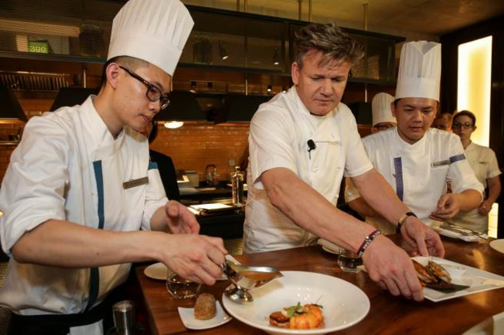
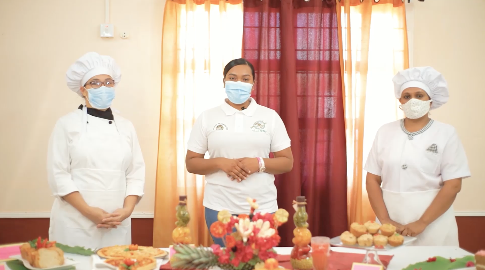

About Us
We are Ku-kin, we will take care of guiding kitchen lovers in their training, specialization, and mastering. We will teach you how to achieve your greatest short, medium, and long-term goals.
By completing the specialization course you will have the opportunity to participate in a scholarship to learn from the best in this science. Consigning an academic degree will open many doors for you in the middle of the digital century. You will even have the possibility to participate in the largest cooking competitions as Master Chef. It all depends on you ..!
You can participate together with those who have already completed the course and receive their experiences, recommendations, and suggestions.
